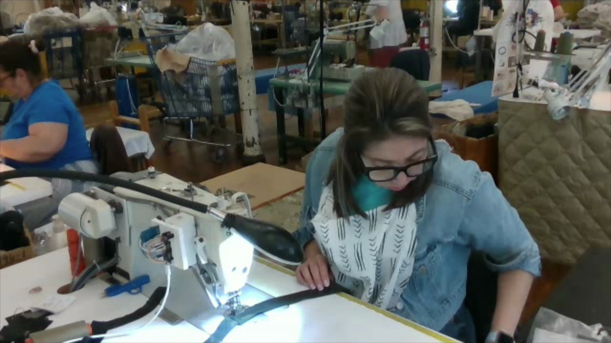
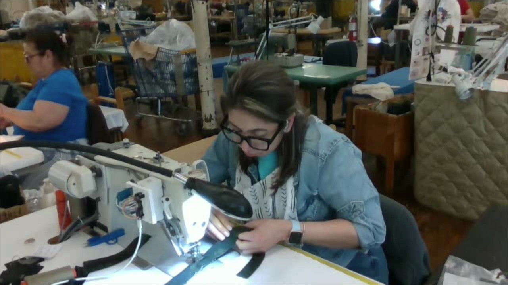
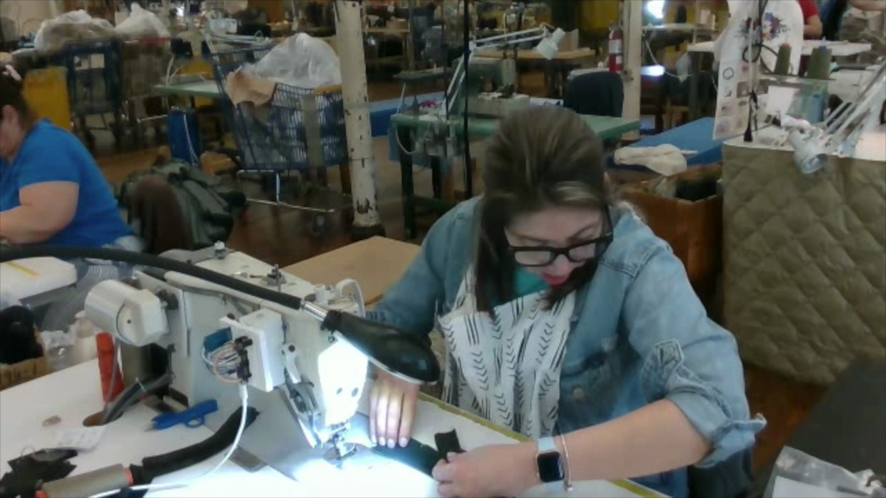
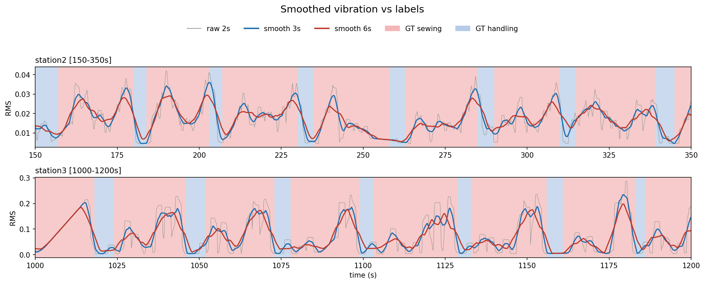
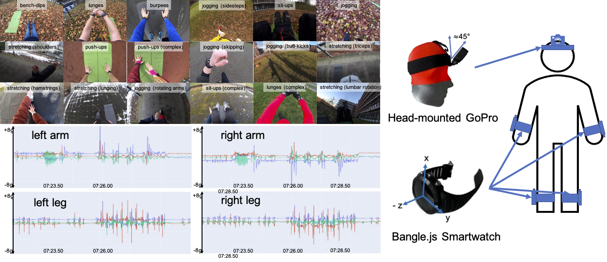
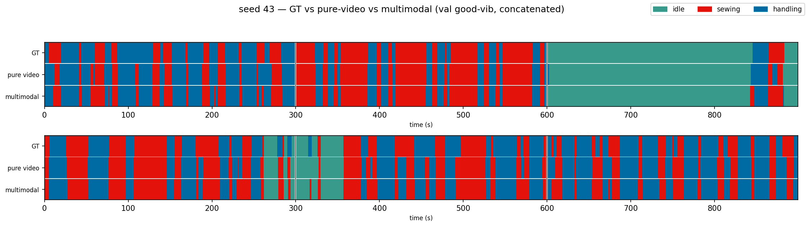
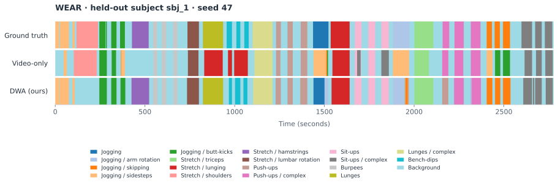
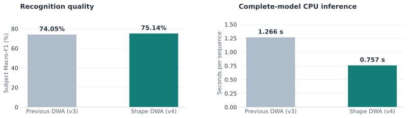

TGIF: worker-state recognition
Video + machine vibration. Three states: idle, sewing and handling.

Idle

Sewing

Handling

DWA combines video with physical sensor signals for temporal action segmentation. It resizes the sensor attention window according to local signal shape.
Video + machine vibration. Three states: idle, sewing and handling.

Idle

Sewing

Handling

Egocentric video + four 50 Hz, 3-axis accelerometers. Eighteen exercise classes plus background.

Video + vibration reaches 92.5% accuracy, up 0.6 percentage points over video-only.

| Method | Accuracy | Macro-F1 | Edit score |
|---|---|---|---|
| Video-only | 91.9 | 92.3 | 89.7 |
| Video + vibration | 92.5 | 92.7 | 91.4 |
Scores in %. Source table.
All six methods use the same 18-subject LOSO splits, seed 47, 2 Hz evaluation grid and 19-class metrics. Baselines are reproduced in our pipeline.

sbj_1, seed 47. Timeline data. Click figures to enlarge.| Method | Accuracy | Subject Macro-F1 | mAP@0.5 |
|---|---|---|---|
| Video-only MS-TCN | 74.20 | 63.05 | 59.96 |
| Early concatenation | 77.24 | 70.85 | 69.22 |
| Fixed-window attention | 78.60 | 72.33 | 67.50 |
| Segment-guided attention (SWA) | 79.18 | 73.96 | 71.12 |
| Sensor-driven DWA (v3) | 79.84 | 74.05 | 69.89 |
| Envelope-shape DWA (v4) | 79.94 | 75.14 | 71.44 |
Equal subject means (%), one seed. Test subjects are excluded from training and checkpoint selection. Full table with subject SDs.
DWA has the highest mean accuracy, Macro-F1 and mAP@0.5 among these six methods.
pp = absolute percentage points, computed before rounding.

Mean CPU forward time decreases from 1.266 s to 0.757 s: 40.2% less time (1.67× speedup) over DWA v3 in this measurement.
The latest WEAR implementation uses three steps: